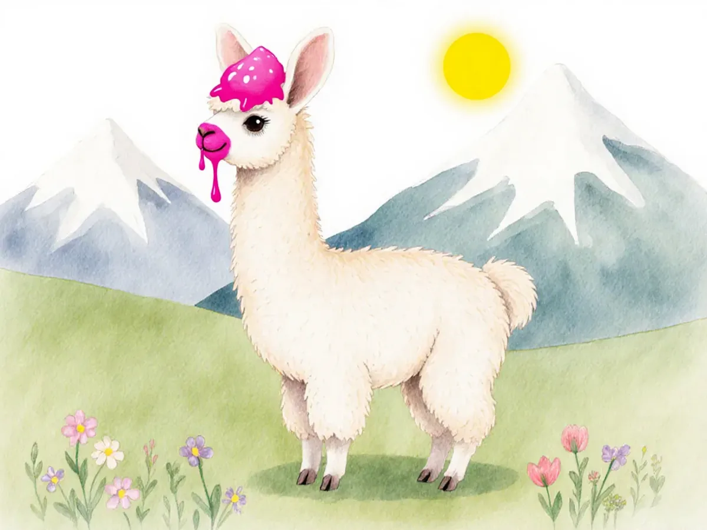

Quelle voix lit le mieux à un enfant ?
Écoute les trois voix sur chaque page, puis dis-moi la lettre que tu gardes.
Il met un cornet de crème glacée sur sa tête. Ta-da! Une corne!
Voix A
Voix B
Voix C

Mais le soleil fait fondre la crème glacée. Elle coule sur son nez. Plic, ploc!
Voix A
Voix B
Voix C
Paco se roule dans les fleurs pour avoir de belles couleurs. Ta-da!
Voix A
Voix B
Voix C